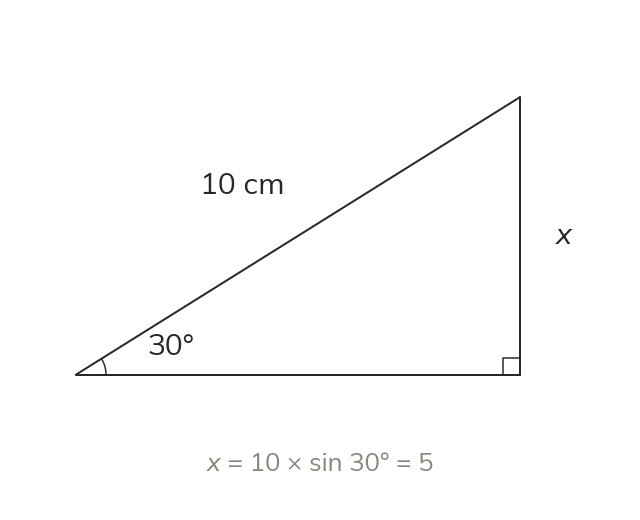

Rearrange the ratio
Rearranged, sin x = opposite ÷ hypotenuse gives opposite = hypotenuse × sin x. So here x = 10 × sin 30° = 5 cm.
From sin x = opposite ÷ hypotenuse, the opposite side is the hypotenuse × sin x. With a hypotenuse of 10 cm and an angle of 30°, the opposite side is 10 × sin 30° = 5 cm.